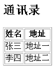

| 作者: | limodou |
|---|---|
| 联系: | limodou@gmail.com |
| 版本: | 0.1 |
| 主页: | http://wiki.woodpecker.org.cn/moin/NewEdit |
| BLOG: | http://www.donews.net/limodou |
| 版权: | FDL |
本教程只想从浅到深地将大家带入到 Django 的世界，因此都是以简单的例子出发，而且这些例子都是为了说明问题，本身并没有什么实际的意义。因此许多高级话题都无法涉及，需要大家自行看文档，做试验。
从上一例我们看到，表格的生成是直接在 index() 函数中返回的 HTML 代码，这种混合方式对于大型开发非常不好，下面我们就学习模板的使用。 Django 自带有模板系统，但你可以不使用它，只要在 return 前使用自已喜欢的模板系统进行处理，然后返回即可。但 Django 自带的模板系统有很多特点，我不做过多的说明。我只是想使用它。
现在我的问题就是：
我有一个通讯录数据，我想使用一个表格来显示。
为了方便，我们不需要使用数据库，因此我把它存在 view 文件中。
#coding=utf-8
from django.shortcuts import render_to_response
address = [
{'name':'张三', 'address':'地址一'},
{'name':'李四', 'address':'地址二'}
]
def index(request):
return render_to_response('list.html', {'address': address})
Note
我使用了汉字，并且字符的编码使用了 utf-8 ，请注意，而且以后如果不特别注明，所有的带汉字的文件，包括模板都将使用 utf-8 编码。
这里使用了一个新方法是 render_to_response ，它可以直接调用模板并返回生成好的文本，直接返回它即可。它接收两个参数，第一个是模板的名字。
Note
在 Django 中，模板文件都是以 .html 结尾的，但也不一定要这样，只是如果使用其它的名字需要修改配置文件。同时最新的Magic-Removal分枝必需要输入完整的模板文件名称，不能省略后面的 .html 。这一点要注意。
第二个参数是一个字典，这里只有一个 Key ，名字是 address ，它的值是一个字典的列表。只要注意模板所接收的就是这样的字典和包含字典的列表就行了。
Note
在0.91中 render_to_response 是在 django.core.extensions 中的，而到了 0.92 转变为 django.shortcuts 。
用来存放模板文件
TEMPLATE_DIRS = (
# Put strings here, like "/home/html/django_templates".
# Always use forward slashes, even on Windows.
'./templates',
)
如果有多个模板目录，加进去就行了。 Django 会按顺序搜索的。
Note
Django 还支持在 App 中定义一个 templates 目录。这样 Django 在启动时会检查所有的 App 的 templates 目录，如果存在，则将路径放在 TEMPLATE_DIRS 之后。这样就方便定义模板路径了。
<h2>通讯录</h2>
<table border="1">
<tr><th>姓名</th><th>地址</th></tr>
{% for user in address %}
<tr>
<td>{{ user.name }}</td>
<td>{{ user.address }}</td>
</tr>
{% endfor %}
</table>
很简单，就是生成了一个两列的表格。在 Django 模板中 {{}} 表示引用一个变量， {%%} 表示代码调用。在变量引用中， Django 还支持对变量属性的访问，同时它还有一定的策略，详细的建议查看 The Django template language 文档。这里我也使用了汉字，因此它也需要使用 utf-8 编码。
这里使用 for .. in 的模板 Tag 处理。因此 address 需要是一个集合。在我们的 View 代码中， address 为一个 list 值。每个 list 又是一个字典。因此 {{ user.name }} 和 {{ user.address }} 就是将这个字典中的元素取出来。
Note
在后面我们将了解更多的模板中的 Tag 标签的使用。而且你会发现， Django 中的 Tag 很强大，可以通过扩展形成庞大的 Tag 库方便模板的开发。
from django.conf.urls.defaults import *
urlpatterns = patterns('',
# Example:
# (r'^testit/', include('newtest.apps.foo.urls.foo')),
(r'^$', 'newtest.helloworld.index'),
(r'^add/$', 'newtest.add.index'),
(r'^list/$', 'newtest.list.index'),
# Uncomment this for admin:
# (r'^admin/', include('django.contrib.admin.urls')),
)
增加了 list 的 url 映射。
效果如这样：
